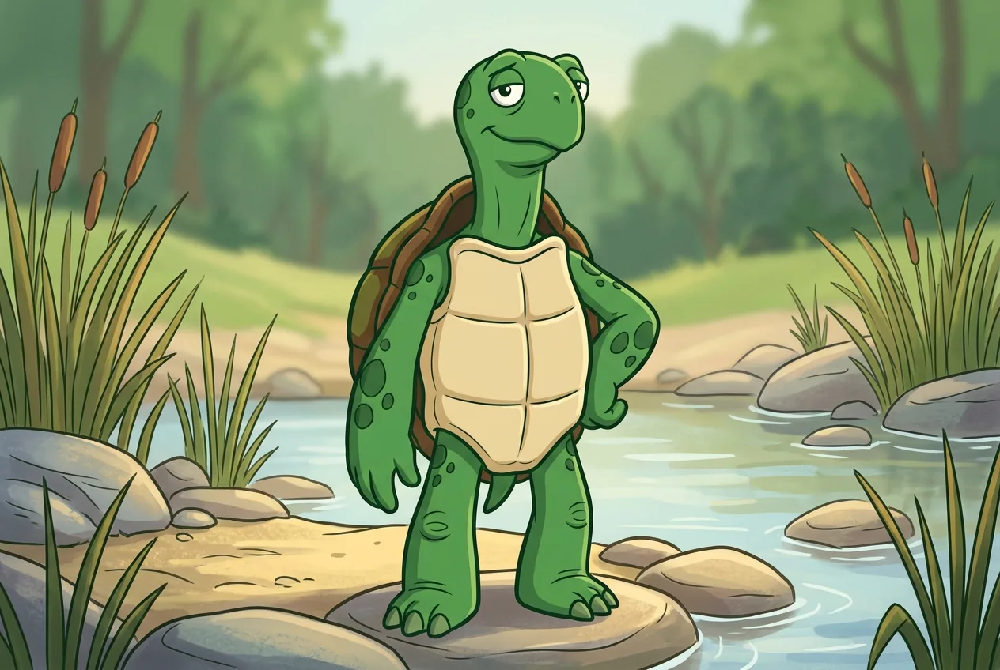
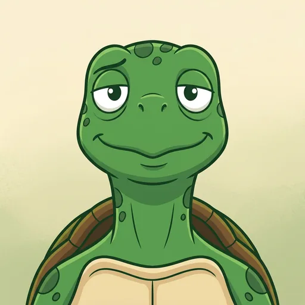
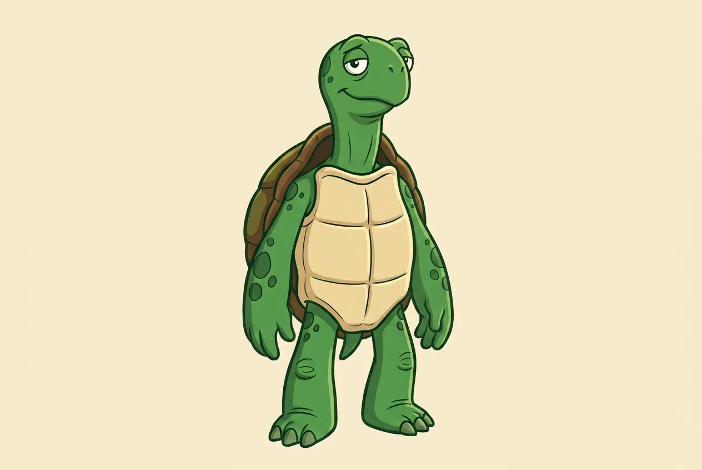
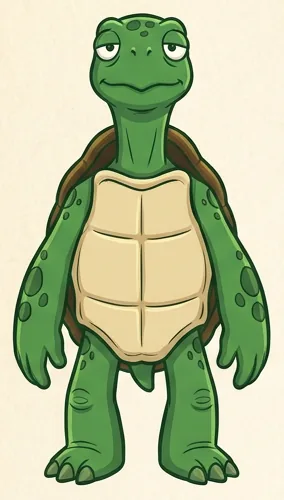
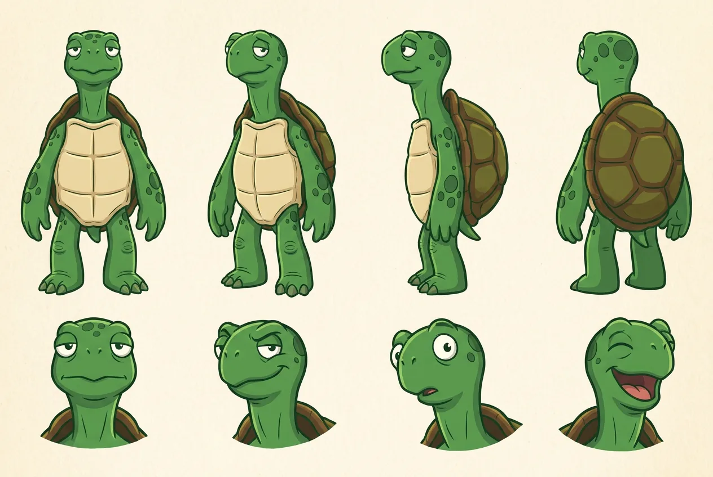
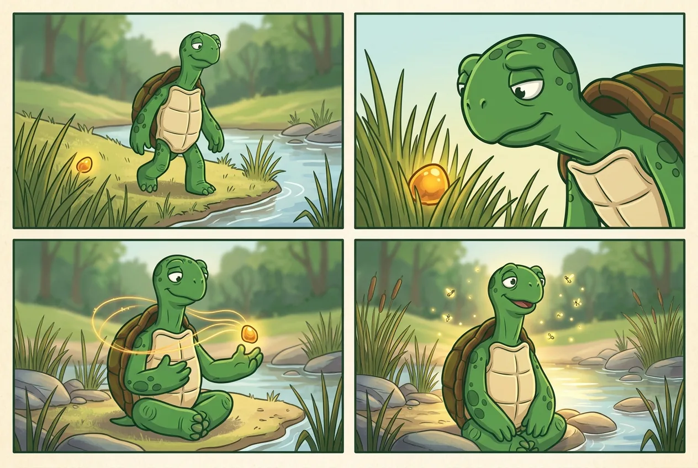

Meet Elmer
The character behind the engine.
Elmer is a wry, lanky turtle: long neck, heavy lids, a half-smile, and a habit of finding the one amber node worth keeping. The accepted art is a frozen character bible — every later draw, strip, and crop is checked against it.

The accepted set
One identity, five roles.
The operator accepted one recommended draw per role. Alternates and rejected draws stay recorded as residue; they are not published. The character sheet is the reference for every future draw.





Provenance
Drawn once. Derived the same way every time.
The accepted masters are recorded in the Elmer work track, together with the prompt, model, reference image, and SHA-256 of every candidate. The published files here are deterministic WebP derivations: metadata stripped, fixed encoder parameters, and a checked manifest of source and output hashes.
The front turnaround is a fixed crop of the accepted character sheet (284x500+24+40), so it is reproducible rather than a fresh model draw. All art is wordless; any future lettering must come from a deterministic text layer, never from asking an image model to spell.
- The art was drawn from a turtle reference photograph, not from the station or album cover.
- No station building, signage, logo, musical instrument, or cover composition appears in any accepted image.
- Publication to a static host is a separate operator act; this page prepares the projection.
Verify it. From the repository root, run python3 scripts/elmer_assets.py verify and python3 scripts/check-site.py. Both are deterministic and write nothing.